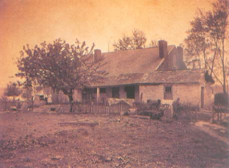

The Rankin House
The historic Rankin House in Ripley is almost 200 years old. It was built by anti-slavery crusader John Rankin (editor of the noted abolitionist newspaper The Castigator), and it was a stop for many slaves on the Underground Railroad. It was even mentioned in Harriet Beecher Stowe's novel Uncle Tom's Cabin as the spot where Eliza crosses the Ohio River on the crumbling ice.

Inside the Rankin House is the ghost of a little brown dog. It's regularly sighted by employees and visitors alike. The story goes that the dog was killed along with its master, who was murdered for his money while gambling with some unsavory characters.
The modest brick house was built in 1829 and was privately owned until 1937. The Ohio Historical Society began restoration attempts in 1947. Today it's preserved as a state historic memorial.
Outside is a reconstruction of the stairway used by many slaves to reach the house from the Ohio River. At the top of the stairway ghostly voices are sometimes heard. Are they long-dead slaves, still travelling the Railroad in search of freedom? Kind of a sad thought.
This drawing by Ohio historian Henry Howe gives a view of Ripley as seen from the Kentucky side of the river in 1847. The Rankin House is pictured in the top-left corner.
Back
Sources
Hurt, R. Douglas. "Profile: Ripley." Timeline. December-January 1984-85: 56-61.